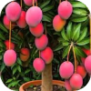
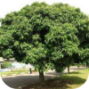
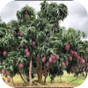
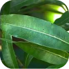

Mangifera indica L
NOMES(s) POPULAR(ES)
Mangueira
GÊNERO
Mangifera
FAMÍLIA
Anacardiaceae
FLORA
Sul e Sudeste da Ásia
Imagens




Características
A Mangifera indica L., conhecida popularmente como mangueira, é uma árvore frutífera e frondosa bastante utilizada em pomares, grandes quintais e áreas rurais. Ela pode atingir entre 15 e 40 metros de altura, dependendo da variedade e do espaço, e possui crescimento inicial bastante rápido, formando uma copa arredondada e muito densa.
Suas folhas são grandes, perenes, de formato alongado e textura firme, apresentando uma coloração avermelhada quando jovens e verde-escura brilhante na maturidade. A planta também produz flores muito pequenas e perfumadas, que aparecem em grandes cachos ramificados nas pontas dos galhos e são bastante atrativas para insetos polinizadores.
Outro destaque são seus frutos, as mangas, que são grandes polpas carnosas e muito suculentas, totalmente seguras para o consumo e não tóxicas. A Mangifera indica L. prefere clima tropical ou subtropical, com boa exposição ao sol, e se adapta bem a diferentes tipos de solos profundos, desde que tenham boa drenagem para o desenvolvimento de suas raízes.
Por produzir uma sombra fresca e frutos deliciosos, é muito usada para fins paisagísticos e agroflorestais, especialmente na arborização de grandes propriedades, sítios e áreas de lazer ao ar livre.
Localização no
Campus

PRÓXIMO À
EDITAR
JARDIM
EDITAR
COORDENADA
EDITAR